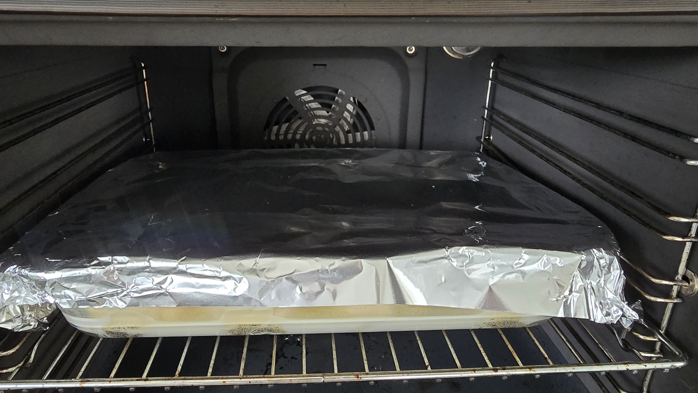
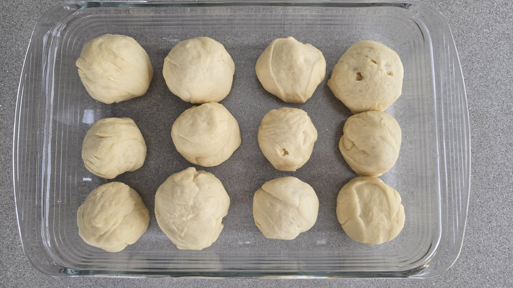
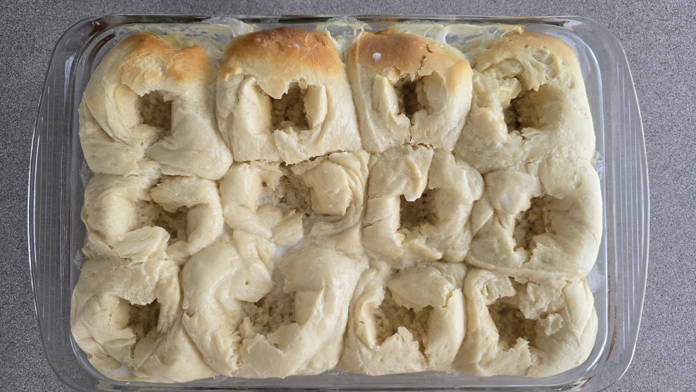
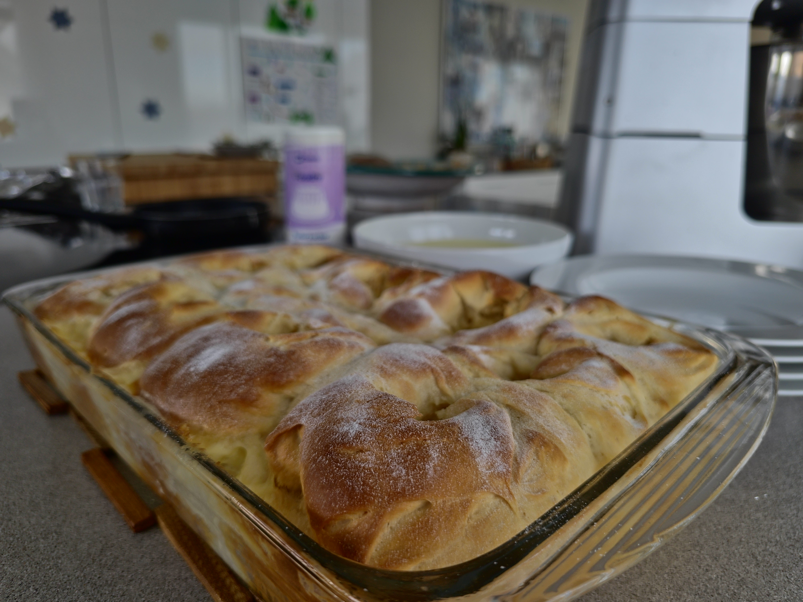
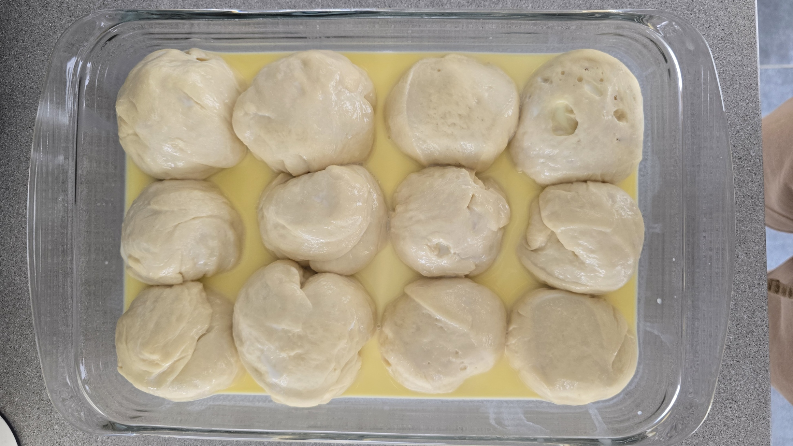
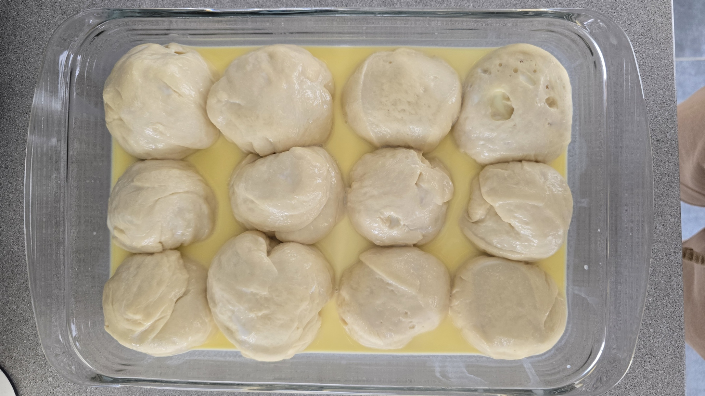
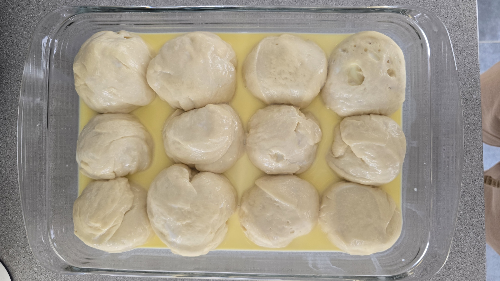
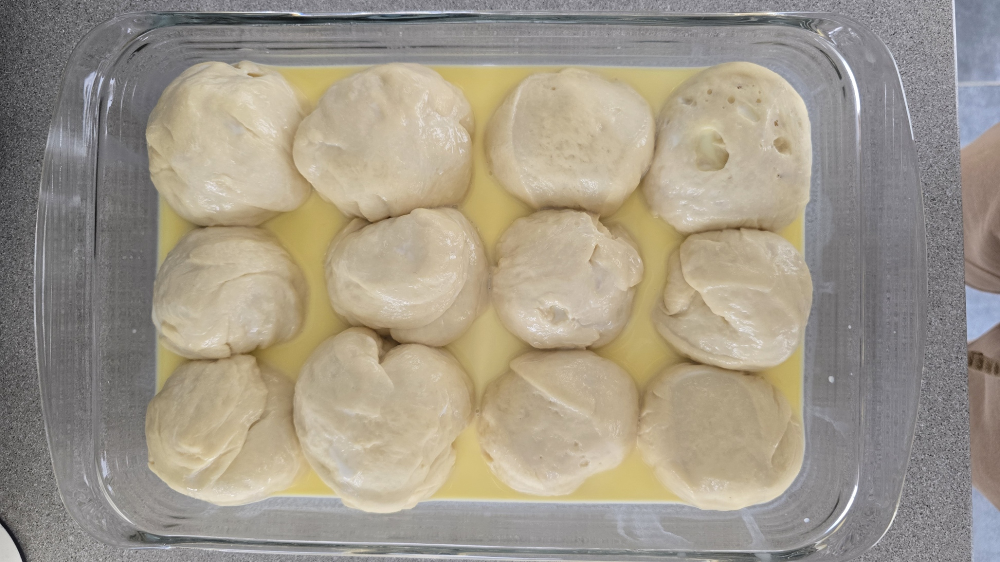

Recipe Images




 




Add milk and crumbled yeast to the mixing bowl. Warm for 3 minutes at 37°C on speed 2.
Add butter, egg, sugar, flour, and salt to the bowl. Knead for 3 minutes using kneading mode.
Transfer dough to a bowl, shape into a ball, cover, and let it rise for 1 hour or until doubled in size.
Divide the dough into 16 balls, place them in a greased dish, cover, and let them rise again for 30 minutes.
Warm milk, butter, and cream for 3 minutes at 40°C, speed 2.
Pour the glaze over the buns, cover the dish, and bake at 200°C for 20-25 minutes.

Per serving (2 buns):